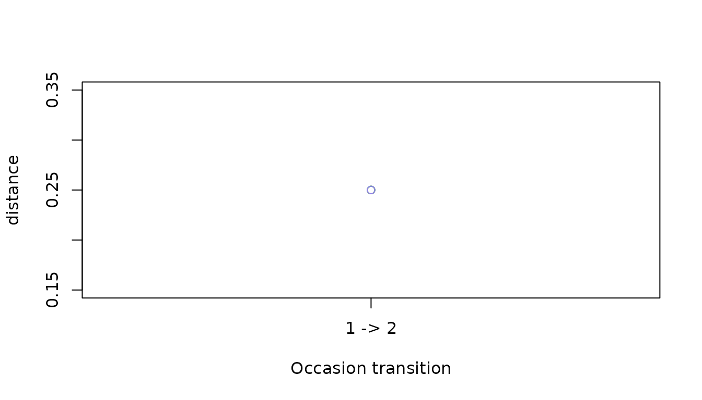

Longitudinal and Panel Sequence Workflows
Source:vignettes/longitudinal-panel-sequences.Rmd
longitudinal-panel-sequences.RmdScope
Panel sequences are repeated ordered-state records from the same independent unit. The workflow preserves the panel identifier, occasion, sequence identity, and preprocessing decisions. Distance between occasions is a structural change measure; it is not evidence of learning, adaptation, or causality by itself.
Synthetic data
base <- data.frame(
participant_id = rep(paste0("p", 1:4), each = 8L),
occasion = rep(rep(c(1, 2), each = 4L), times = 4L),
sequence_id = rep(paste0("s", 1:8), each = 4L),
sequence_order = rep(1:4, times = 8L),
state = c(
"A", "B", "C", "D", "A", "B", "D", "D",
"A", "C", "C", "D", "A", "C", "D", "D",
"D", "C", "B", "A", "D", "C", "A", "A",
"D", "B", "B", "A", "D", "B", "A", "A"
),
stringsAsFactors = FALSE
)
head(base)
#> participant_id occasion sequence_id sequence_order state
#> 1 p1 1 s1 1 A
#> 2 p1 1 s1 2 B
#> 3 p1 1 s1 3 C
#> 4 p1 1 s1 4 D
#> 5 p1 2 s2 1 A
#> 6 p1 2 s2 2 BPrepare and audit the panel
panel <- prepare_sequence_panel(
base,
panel_id_col = "participant_id",
occasion_col = "occasion"
)
panel$index
#> sequence_id panel_id occasion occasion_rank sequence_length transition_count
#> 1 s1 p1 1 1 4 3
#> 2 s2 p1 2 2 4 3
#> 3 s3 p2 1 1 4 3
#> 4 s4 p2 2 2 4 3
#> 5 s5 p3 1 1 4 3
#> 6 s6 p3 2 2 4 3
#> 7 s7 p4 1 1 4 3
#> 8 s8 p4 2 2 4 3A unique panel/occasion combination is required by default. This prevents two sequences from being silently treated as the same repeated observation.
Summarise occasions and states
panel_summary <- summarise_sequence_panel(panel)
panel_summary$occasions
#> occasion n_panels n_sequences mean_length median_length mean_transitions
#> 1 1 4 4 4 4 3
#> 2 2 4 4 4 4 3
head(panel_summary$states)
#> occasion state occurrence_count occurrence_share sequence_count
#> 1 1 A 4 0.250 4
#> 2 1 B 4 0.250 3
#> 3 1 C 4 0.250 3
#> 4 1 D 4 0.250 4
#> 5 2 A 6 0.375 4
#> 6 2 B 2 0.125 2
#> sequence_prevalence
#> 1 1.00
#> 2 0.75
#> 3 0.75
#> 4 1.00
#> 5 1.00
#> 6 0.50Quantify within-panel change
changes <- compare_sequence_panel_changes(
panel,
method = "levenshtein",
normalise = "max_length"
)
changes
#> panel_id from_sequence_id to_sequence_id from_occasion to_occasion from_rank
#> 1 p1 s1 s2 1 2 1
#> 2 p2 s3 s4 1 2 1
#> 3 p3 s5 s6 1 2 1
#> 4 p4 s7 s8 1 2 1
#> to_rank distance length_change transition_change
#> 1 2 0.25 0 0
#> 2 2 0.25 0 0
#> 3 2 0.25 0 0
#> 4 2 0.25 0 0Alternative distance methods use the same explicit arguments as
compute_sequence_distance(). The result compares
consecutive occasions within each panel only.
plot_sequence_panel_changes(changes, metric = "distance", type = "individual")
plot_sequence_panel_changes(changes, metric = "distance", type = "summary")